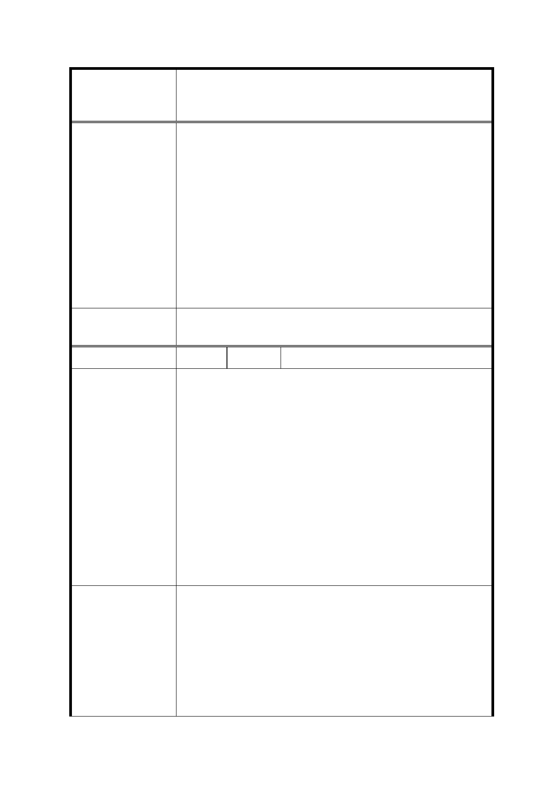

修訂臺北市信義計畫地區細部計畫（第三次通盤
案 名 檢討）案
市府回覆意見
1. 本計畫區之人行系統之建置，係為紓緩松仁路以西及信義路
以北核心商業區之人潮，故予以規定設置天橋、架空走廊或
地下道系統。目前已由北而南串連部分百貨、影城、飯店及
購物中心。
2. 未設置空橋部分，目前係以平面之人行步道及通道等公共開
放空間，結合公園綠地系統予以連接。
3. 又為鼓勵並完善人行聯通設施之設置，於本次通盤檢討增訂
供公眾使用，具有頂蓋且兩側透空、通風之人行空間得不計
入建蔽率及容積率，期以提高設置連通設施之意願。未來視
個案條件，於開發時提供具備必要性及公益性之天橋或地下
道，並經本市都市設計委員會審查通過，方得設置。
委 員 會 決 議 依市府回覆意見辦理。
編
號 10
陳情人 戴小姐
你好。最近剛從香港回到台北信義區工作，前些日子有幸參予
貴會的說明會；希望透過自身的經驗，分享一些想法，共同把
信義區變為更便利，更國際化的地方。
針對「修訂台北市信義計畫地區細部計畫（第三次通盤檢討）
案」：陸，變更計畫內容的第八項：天橋
陳 情 理 由 （1） 問題：信義區的人口密度
（2） 解說：香港中環的人口密度遠高於台北信義區，然而藉
由連接中環主要建築物和購物中心人行的通道和地下
道，使得民眾可以穿梭其間，不僅疏散了人流及車流，
同時也讓民眾行走得更為安心。
有意願旁聽說明會。希望收到通知。請問如想要發言的話，是
否可在之後的日子再註冊報名？
信義區的主要路口（如: 忠孝東路與基隆路口，松壽路與市府
路）應該透過業主的認養和管理，在合理的情況下增設人行天
橋或是地下通道。業主如將自己附近的交通及連結做好，也會
建 議 辦 法 帶來更多的客群和商機；因此政府應規劃方案與業主一起合作
（鼓勵業主），一起打造更好的人行路線。同時，在顧及民眾
的安全與便利性和取得雙方大樓許可的情況下，透過向政府相
關單位申請後，希望政府可批准信義區（佔地超過一定規模）
30